UI styles: Classic and Modern, 21 November 2026¶
A design session with the owner on how the firmware UI should look and behave. It builds on the 12 November design review and overrides it where the two disagree.
The brief (owner): the interface should look and feel like the original click-wheel player's. New components and some animation will be added, but as much of the original as possible is kept, for familiarity.
This folder holds:
- this README: the decisions, the rules and the exact values;
mockups/: every screen that was drawn, as a PNG and as the standalone HTML it was rendered from (the HTML is the reference for exact colours, gradients and sizes);- IMPLEMENTATION-BRIEF.md: the working instructions for building it;
- PROGRESS.md: the checklist of work, ticked off as it merges.
The mock-ups are design intent drawn in HTML, not firmware output. They are drawn at 600x450, the touch AMOLED boards' profile, in Montserrat Medium (22 / 26 / 38 px) with Lucide icons. Album art squares are placeholders. Track names on the first screens are the test fixtures; the Music screens use real names from the owner's library.
Owner decisions (21 November 2026)¶
- Two styles, two modes each. A theme is a style (Classic or Modern) and a mode (Light or Dark). Auto still switches the mode when the backlight dims.
- Classic is the 6G look as shipped: gradient selection bar, glossy status bar, green shaded battery. It is drawn fresh, not copied from the original's artwork.
- Modern goes beyond it: "art-led glass". True black, a backdrop and accent taken from the album art, translucent tinted chrome. It borrows the layering idea from current phone design but not live blur or refraction.
- A monochrome style is parked. When it returns it may bring its own fonts, provided they go through the same rendering rules (display-text filter, glyph coverage, licences screen).
- The AMOLED leads. Design at 600x450 first; 480x360 and 320x240 are scale-downs that must pass the layout audit.
- Status bar is the same on every screen: play state at the left, title in the middle, hardware icons at the right.
- Play state is one of three glyph groups: play; play then the two-arrow loop (repeat); play then the crossing arrows (shuffle). Merged single icons were looked for in five open icon sets and none works at status-bar size.
- Track position stays (
3 of 12) after the play glyph. - No clock. There is no RTC, so the time is unknown after every cold start. The clock is dropped everywhere.
- Headphones icon only while a 3.5 mm plug is in the jack. A jack-plug icon in its place when the output is set to Line. Bluetooth icon is blue when a headset is connected or in use.
- Volume on Now Playing is not permanent. Turning the wheel swaps the progress bar for a volume bar with a quiet speaker at one end and a loud one at the other; it reverts when the wheel rests. No dB figure.
- Volume on any other screen swaps the status-bar title for a small volume bar for about a second. The bottom HUD strip goes away.
- The format is less prominent: one small grey line (
FLAC 16/44.1), no pill. The output is not written on Now Playing at all; the status-bar icon says it. - The toast strip goes away. Messages go to one of three places (below).
What a style owns¶
Today a theme is a table of 14 colours (app/ui/ui_theme.[ch]) and components such as the battery are fixed drawings.
From now on:
| A style owns | Shared by every style |
|---|---|
| Its colour table, one per mode, with the same 14 token names | Layout: every position and size in ui_metrics_t |
| A small set of skins: status bar fill, battery, selection bar, scroll bar, progress and volume bars, panel, art frame, list ground | Row counts (7 single-line, 5 two-line) |
| Whether it draws an art backdrop | Fonts, glyph coverage, the display-text filter |
| Wheel and button behaviour, copy, screen structure |
Both styles therefore run the same screens and the same snapshot tours.
Status bar¶
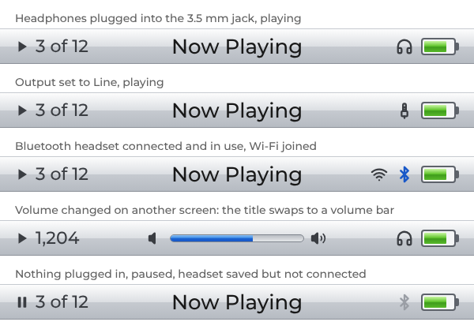
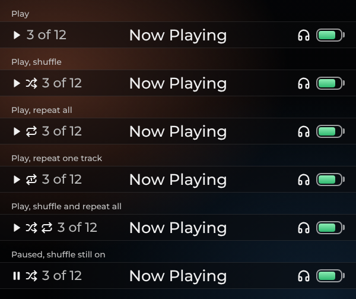
Three zones, in this order, on every screen:
Left: play state, then context.
| State | Glyphs |
|---|---|
| Stopped | nothing |
| Playing | play triangle |
| Paused | pause bars |
| Shuffle on | transport glyph, then crossing arrows (Lucide shuffle) |
| Repeat all | transport glyph, then two-arrow loop (Lucide repeat) |
| Repeat one | transport glyph, then loop with a 1 (Lucide repeat-1) |
| Shuffle and repeat | transport glyph, crossing arrows, loop |
The mode glyphs stay while paused. After the glyphs comes the screen's context text where it has one: 3 of 12 on Now
Playing, the count on a list (1,204, 9 albums). Home and menus show the glyphs only.
Centre: the screen title. It gives way, for one to two seconds, to a message or to the volume bar (see Feedback).
Right: hardware, right-aligned, always in this order: Wi-Fi, Bluetooth, output (headphones or jack plug), lock, battery. A member that does not apply is not drawn and the others close up toward the battery.
| Icon | Shown | Colour |
|---|---|---|
| Wi-Fi | station joined | ink |
| Bluetooth | a headset is saved | dim when not connected; blue when connected or in use |
| Headphones | a plug is in the 3.5 mm jack and the output is wired | ink |
| Jack plug | Audio output is set to Line | ink |
| Battery | always | style skin; rules as built (green charging, red below 15 %) |
The jack-plug glyph is not in Lucide and was drawn for this design: see mockups/classic-status-states.html.
Not yet drawn, listed so they are not forgotten: fast-forward and rewind while scanning, opening (matters for network streaming), can't-play, recording, and the three busy dots for a background library update.
Now Playing¶
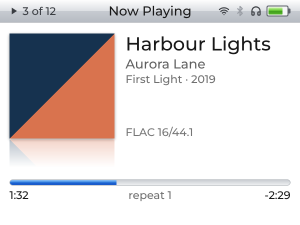
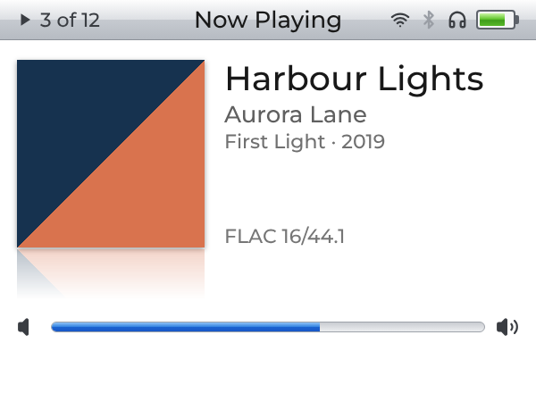
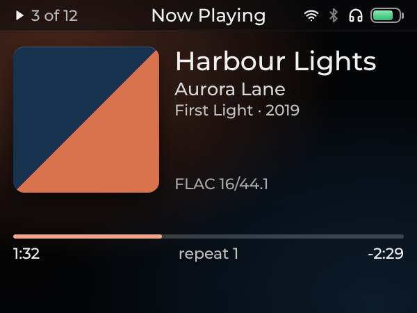
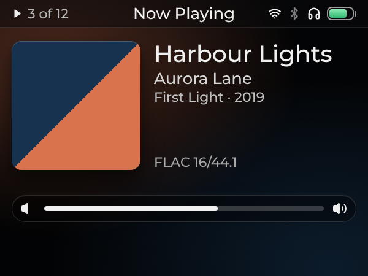
- At rest: art, title, artist,
Album . Year, the small format line, the progress bar with elapsed and remaining and the repeat / shuffle word between them. - Wheel moves: the progress bar and the times are replaced in place by the volume bar with a speaker glyph at each end. It returns to progress when the wheel has rested (use the existing 1.2 s hold).
- The permanent volume strip, the dB figure, the format pill and the output pill are removed.
- Seek mode and page 2 are unchanged in behaviour and take the style's skins.
Feedback: three places¶
The sliding toast strip and the bottom volume HUD are removed in both styles. A message goes to exactly one of:
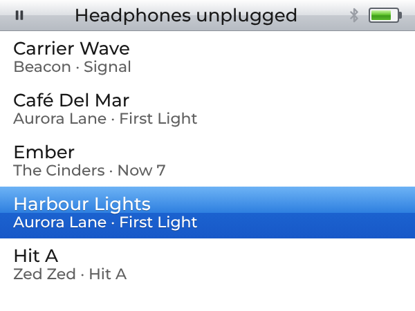
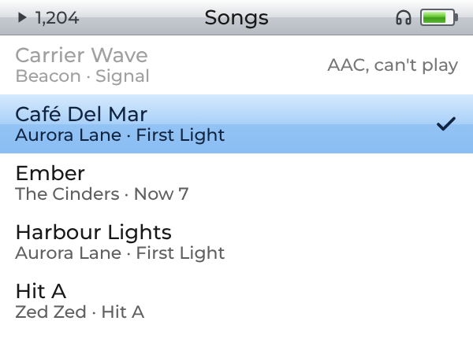
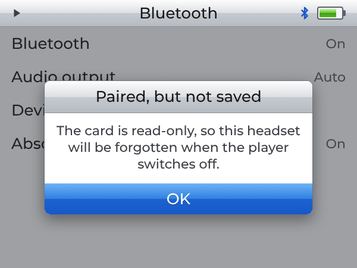
| Place | Use it when | It must not | Messages that move here |
|---|---|---|---|
| Status bar title (swaps for about 2 s) | Something changed by itself and the user only needs to know | Need an answer; exceed about 24 characters | Headphones unplugged, Couldn't reconnect - paused, Line out off, No audio output, headset connected / disconnected, Library updated, and the transient refusals Busy, Can't pair now, Not now, Bluetooth is starting |
| The row | The feedback is about the row under the selection bar | Say anything unrelated to that row | Success as a flash of the bar with a tick: Added to On-The-Go, Removed from On-The-Go. A reason on a greyed row, visible before the press: Not in the library, Not an audio device, Plug into the jack first, No speaker in this device, Nothing playing, unplayable codecs (AAC, can't play) |
| Centred panel (Select or Menu dismisses) | Something was lost or is about to be | Be used for routine confirmations | Battery empty, Can't save: settings full, Paired, but not saved (read-only card), Card is full, Card read error, Library update stopped |
Rules:
- Volume and a message share the status-bar title. Volume wins; the message shows after it.
Can't open: too many screensis an internal limit and should not reach the user: fix the cause or log it.- The firmware raises about 50 toasts today (
grep ui_toast_show app/ui). Every one must be assigned to a place; none may be silently dropped.
Music screens¶
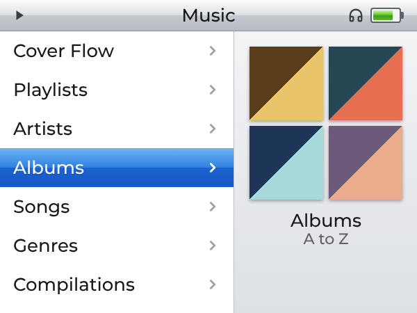
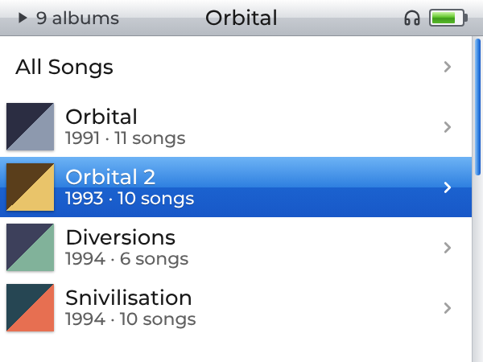
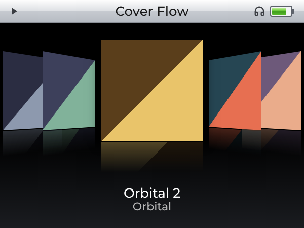
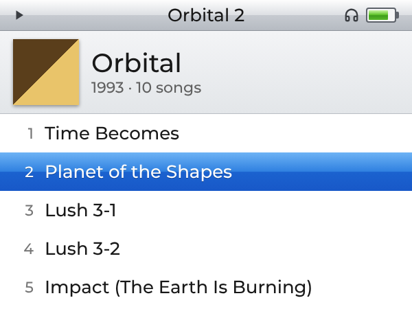
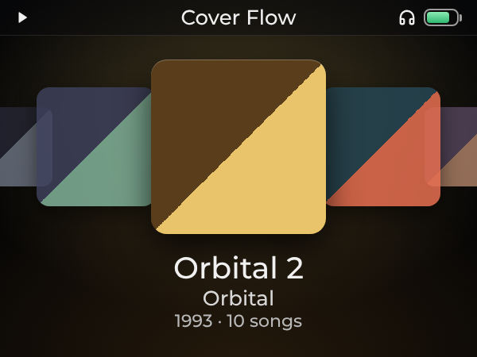
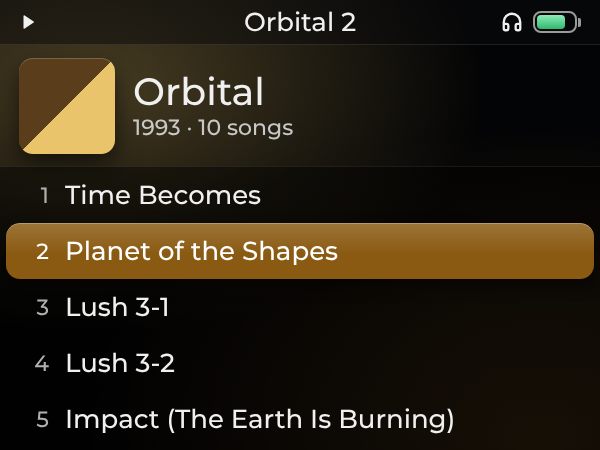
- Music menu: split like Home. Cover Flow, Playlists, Artists, Albums, Songs, Genres, Compilations, Update Library; the right pane previews the highlighted item (four covers for Albums).
- An artist's albums: All Songs first, then a two-line row per album with a cover thumbnail, the year and the song count. Drawn in year order (designer's call, see Open questions).
- Cover Flow: Classic is the angled version with reflections on black. Modern is five flat rounded covers (220 / 150 / 100 px) over a backdrop washed in the centre album's colours.
- Album: the status-bar title is the album; a header shows the cover, the artist, the year and the song count; then numbered tracks.
Classic, Light: the values¶
All at 600x450. A | B in a gradient means a hard step at the midpoint (the gloss line).
| Part | Value |
|---|---|
| Ground / text | #ffffff; ink #181818, secondary #606060, tertiary #767676, disabled #a0a0a0 |
| Status bar | 45 px; top to bottom #fdfdfd, #dcdfe3 at 50 % | #c6cad0 at 51 %, #b6bbc2; 1 px #8c9199 under it; glyphs #3a3d42, dim #9a9ea5, Bluetooth active #1858c8 |
| Battery | body 44x22, 2 px #5d626a outline, radius 4, inside #f4f5f6; fill top to bottom #c9f5a3, #63c62f at 45 % | #3f9c1c at 55 %, #58b82a; terminal 4x10 |
| Selection bar | full width, square; #6db3f5, #2f80e0 at 50 % | #1b62cf at 51 %, #1858c8; white text with a 1 px dark shadow |
| Selection flash | #d6eafd, #a9d0f8 | #93c3f5, #8abdf3; text and tick #10233f |
| Right pane (Home, Music) | #f3f4f6 to #dde0e4, 1 px #b9bdc4 at its left; art with a soft drop shadow |
| Scroll bar | 14 px gutter #d5d8dc to #f1f2f4; thumb left to right #8fc3f6, #2f80e0, #1858c8, radius 4 |
| Progress / volume bar | 12 px, radius 6; track #c9ccd1 to #eceef0 with 1 px #9da2a9; fill as the selection bar, starting #8fc3f6 |
| Art | square corners; on Now Playing a 56 px reflection at 30 % fading to nothing |
| Album header | 121 px, #f3f4f6 to #e3e6e9, 1 px #b9bdc4 under it, 96 px art |
| Panel | 452 px wide, white, 1 px #6f757d, radius 10; title strip in the status-bar gradient; the OK row is a 52 px selection bar; scrim rgba(40,44,52,.45) |
| Cover Flow | black to #1a1c20; centre 200 px, sides 156 px turned 58 degrees, reflections |
Modern, Dark: the values¶
| Part | Value |
|---|---|
| Ground | #050608, effectively black |
| Backdrop | two soft washes in the art's two main colours (one near a top corner at about 45 to 55 % strength, one near the opposite bottom corner at about 75 to 85 %), under a darkening scrim of 30 % at the top to 50 to 55 % at the bottom. Made once per track from the art (a small blurred, darkened copy), never blurred live. No art: the ground alone |
| Accent | the art's dominant colour with its lightness clamped until white text on it is at least 4.5:1. In the mock-ups #d9734e becomes #b8502c (7:1) and #e9c46a becomes #8a5a12 (5.9:1) |
| Text | ink #f0f0f0, secondary #b0b0b0 to #c8c8c8, disabled #7c7c7c |
| Status bar | rgba(10,10,12,.5) over the backdrop, 1 px rgba(255,255,255,.10) under it; dim glyphs #7a7a7a; Bluetooth active #5aa2ff (fixed, not the accent) |
| Battery | capsule 44x22, 2 px rgba(255,255,255,.6), radius 8; fill #8cecb4 to #30b870, radius 4; terminal 3x9 |
| List ground | rgba(0,0,0,.38) to .42 over the backdrop; dividers rgba(255,255,255,.08) |
| Selection bar | inset 6 px, radius 14 (one line) or 16 (two lines); the accent, with a highlight of rgba(255,255,255,.16) fading out by 55 % of its height, a 1 px light top edge rgba(255,255,255,.28) and a shadow 0 6px 16px rgba(0,0,0,.45); white text |
| Selection flash | the bar keeps its colour and gains a 3 px ring rgba(255,255,255,.6) and a tick |
| Scroll bar | 4 px, rgba(255,255,255,.45), no track |
| Progress bar | 6 px, radius 3; track rgba(255,255,255,.2); fill a light tint of the art colour (#f2a586 in the mock-up) |
| Volume (Now Playing) | a floating capsule 44 px high, radius 22, rgba(0,0,0,.4), 1 px rgba(255,255,255,.14); bar 8 px, fill #f0f0f0 |
| Art | radius 16, shadow 0 12px 30px rgba(0,0,0,.6), 1 px light top edge |
| Panel | 452 px wide, rgba(28,28,32,.92), 1 px rgba(255,255,255,.16), radius 22; OK is a 50 px accent button, radius 14; scrim rgba(0,0,0,.6) |
| Cover Flow | flat covers 220 / 150 / 100 px, radii 20 / 16 / 12, opacity 1 / .85 / .6 |
The existing rule that every colour is RGB565-exact was written for the LCD. Keep it for flat fills; gradient stops and alpha blends on the AMOLED are exempt.
Other resolutions¶
Lengths scale through the existing metrics profiles: 600x450 values times 4/5 for 480x360 and 8/15 for 320x240, rounded
as ui_metrics.c already does. Row counts do not change. On 320x240 the left of the status bar is tight when shuffle and
repeat are both on; the track position may drop out in that one state.
Open questions¶
Not decided. Do not settle these by guessing; ask the owner.
Gate 2 (22 November 2026), app spec owner decision 13: 9 is decided (placeholder cover, "Nothing playing" and the song count). Classic Light is adjusted to 4.5:1 contrast where the values below fall short, and Bluetooth saved versus connected gets a cue besides colour (bears on 4).
| # | Question | What was drawn meanwhile |
|---|---|---|
| 1 | Classic Dark and Modern Light have not been designed | Only Classic Light and Modern Dark exist |
| 2 | Typeface. The 6G used a Helvetica-like face; both styles use Montserrat for now | Montserrat |
| 3 | Row "done" feedback in Classic: the pale flash drawn, or the original's quick blink | Pale flash with a tick |
| 4 | Saved but unconnected Bluetooth: dimmed icon (as built) or hidden | Dimmed |
| 5 | Modern recolouring: in Cover Flow and Album the backdrop and accent follow the album on screen; elsewhere the playing track. Or always the playing track? | Follows the album on screen in those two views |
| 6 | Album order under an artist: by year or by name | By year |
| 7 | Thumbnails on album rows cost a decode per row | Drawn with thumbnails |
| 8 | Classic Cover Flow angled needs the performance test first; the firmware has only the flat one | Angled |
| 9 | Home right-hand pane when nothing is playing, now that the clock is gone | Not drawn |
| 10 | Performance. Modern depends on alpha blending and a full-screen backdrop at speed on a microcontroller. Untested | See the brief, phase 0 |
| 11 | Long names (for example Ministry of Sound - the Annual IV - [Disc 1 of 2] (Judge Jules) (Disc 1)): tickers in lists; Cover Flow's title line needs a rule |
Not drawn |
| 12 | Left of the status bar at 320x240 with shuffle and repeat both on | Not drawn |
What this overrides¶
- 12 November review: the toast strip (DS-5, owner decision 8), the volume HUD (NP-4), the Now Playing pills and volume strip (NP-1), the clock in the status bar's left slot (DS-3), the rounded inset selection bar as the only look (DS-4; it becomes Modern's).
docs/ui.mddescribes the UI as built. It stays correct until each piece of this design merges, and is updated in the same PR as the code.